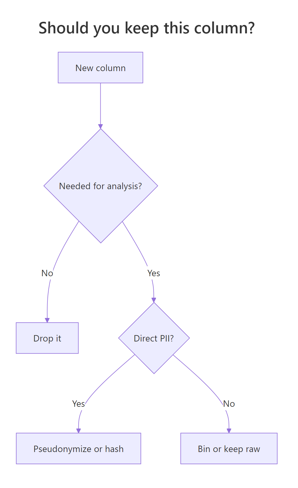
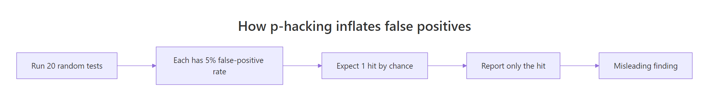
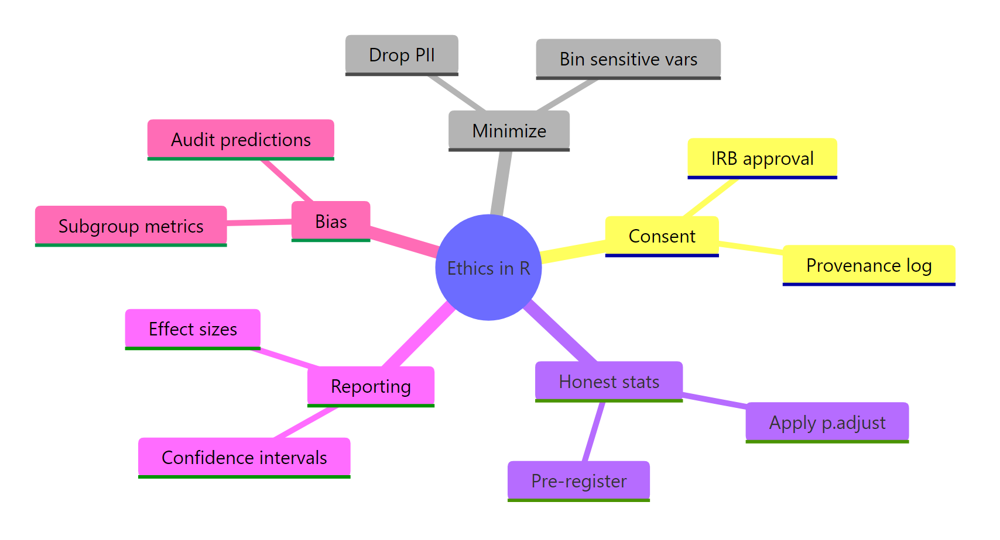

Data Ethics for R Programmers: The Questions to Ask Before You Analyse
Data ethics is the set of choices you make about consent, privacy, p-hacking, and reporting that decide whether your analysis helps people or harms them. This guide walks through six concrete questions to ask before you analyse, each paired with R code you can run right now.
Why does data ethics matter for the code you write?
You can fit a model in one line of R. The hard part is everything around it: who consented, which rows to drop, whether you ran fifty tests and kept the prettiest, and whether the model quietly fails for one subgroup. Ethics in R looks like code, not a lecture. The cheapest ethical habit is stamping each analysis with a reproducibility manifest a future reader can re-run.
The function does almost nothing, and that's the point. A printed manifest is a contract: it says "if you re-run this script with R 4.4 and seed 2026 on these 240 rows, you should get the same answer I did." Most ethical breakdowns in data science start with the absence of this single object.
Try it: Extend data_provenance() to record a consent_status field (e.g., "IRB-approved" or "public-domain"). Call it once and print the result.
Click to reveal solution
Explanation: Adding a single named field to the list captures the consent status alongside the rest of the manifest. Future readers can grep for it.
What does informed consent mean when you only see a CSV?
Most R users never collect data themselves. A colleague hands you a CSV, or you pull a table from a warehouse, and consent feels like someone else's problem. It isn't. Consent becomes a documentation problem: can you trace each row back to a person who agreed to be in your study? If not, that row should not enter your analysis frame.
The simplest enforcement is a consent_form_id column and a hard refusal to use rows that lack one. We'll simulate a small medical dataset and show the filter.
Two rows out of five are gone, P003 had no form, P005 had a blank string. Your analysis runs on three rows now, not five. That feels like a loss, but the alternative is publishing results that include people who never agreed to participate. The filter has to be the very first line of your pipeline, before any joins, imputations, or models.
tidyr::replace_na() or model-based imputation paper over a consent gap, the data point doesn't exist for you.Try it: Tighten the filter to also require that consent_form_id matches the regex ^CF-\d{4}$. Save the result to ex_consented.
Click to reveal solution
Explanation: grepl() returns TRUE only when the ID matches the exact pattern CF- followed by four digits. Blank strings and NAs both fail the regex, so the filter handles them in one expression.
How much of this data should you actually keep?
Data minimization is the principle that you should collect and retain only what your analysis truly needs. Direct identifiers, name, email, social security number, almost never belong in an analysis frame. Indirect identifiers like exact date of birth or full ZIP code often need to be binned or generalised. The rule of thumb: if you can answer your question without a column, drop it.
We'll take the consented dataset, drop the direct-PII columns, and bin age into a coarser group so the data carries less re-identification risk.
The participant and consent_form_id columns are gone. age has been replaced by a 4-level factor, and the original participant codes are now opaque anon_* IDs. The dataset still answers the question "does outcome score differ by age group?", but it can no longer be linked back to a real person without the source-of-truth file.

Figure 1: Decide what to keep on a per-column basis.
Try it: Bin a numeric income vector into 5 quintiles using cut() + quantile(). Save the result to ex_income_bin.
Click to reveal solution
Explanation: quantile() with probs = seq(0, 1, 0.2) returns the cut points for five equal-sized buckets, and cut() assigns each value to its bucket. Binning protects identity while preserving rank-order information.
How do you know if you're p-hacking by accident?
P-hacking means running many statistical tests and reporting only the ones that crossed p < 0.05. R makes this dangerously easy, cor.test() and t.test() are one line each, and a researcher can chew through fifty comparisons in an afternoon without noticing. The maths guarantees that 5% of those tests will be "significant" by pure chance, even when nothing real is going on.
To make the problem concrete, we'll generate 20 completely random columns, run 19 correlation tests against the first column, and count how many cross the threshold.
One of the nineteen tests came back with p = 0.019, a finding that would look impressive in a paper. But the numbers are pure noise; we drew them from rnorm() ourselves. If you ran the experiment, looked at the 19 p-values, and quietly published only the "significant" one, you would be p-hacking. The temptation is enormous because the cherry-picked test really does look real.

Figure 2: Each independent test contributes a small false-positive risk that compounds.
The fix isn't to run fewer tests, exploration is legitimate. The fix is to correct the p-values for the number of tests you ran. R has p.adjust() built into base stats with several methods; Benjamini-Hochberg ("BH") is the modern default for exploratory work.
After the BH correction, zero tests survive. The single "significant" hit was inflated by the cost of looking 19 times. This is what an honest report of the experiment looks like: "we tested 19 correlations and none were significant after multiple-comparison correction."
p.adjust() to the whole exploration batch.Try it: Apply Bonferroni correction (method = "bonferroni") to p_values and count survivors.
Click to reveal solution
Explanation: Bonferroni multiplies each p-value by the number of tests, which is the most conservative correction. BH is more powerful for exploratory work; Bonferroni is appropriate when even one false positive is unacceptable.
How do you report results without misleading anyone?
A bare p-value is the most misleading number you can report. It answers "would I see something this extreme by chance?" but says nothing about how big the effect is or whether it matters. The honest minimum is four numbers together: the effect size, a confidence interval, the sample size, and the p-value.
We'll simulate a small A/B test on conversion times, run a t-test, and pack everything we need into a single tibble row. The shape matters: one row, five columns, no hidden cherry-picking.
The mean difference is about 1 second, the 95% confidence interval runs from 0.06 to 1.88, and Cohen's d is 0.42, a small-to-medium effect. The p-value is 0.037, which would headline as "significant," but the wide CI tells a more honest story: the real effect could be almost zero or it could be nearly two seconds. Reporting all five numbers lets a reader judge for themselves.
Try it: Add a practical_significance column to ab_result that is TRUE when abs(cohens_d) > 0.2.
Click to reveal solution
Explanation: Cohen's conventions call 0.2 a "small" effect, 0.5 "medium," and 0.8 "large." Anchoring the flag to a published threshold makes the cutoff defensible.
How do you check your model for harmful bias?
A model can be 90% accurate overall and still fail catastrophically for one subgroup. Aggregate accuracy is the metric most likely to hide harm because it averages over the people the model works for and the people it doesn't. The check is straightforward: compute the same metric per group and look at the gap.
We'll simulate a binary-classification scenario with two demographic groups, then disaggregate accuracy and false-negative rate.
The two accuracy numbers look close in this synthetic example, but the false-negative rate gap (0.47 vs 0.52) means group_b is missed more often. In a medical-screening context that gap is the difference between catching a disease and sending a patient home. Reporting only the average of 49.7% would erase the disparity entirely. The fix isn't fancier maths; it's the habit of always disaggregating before you ship.
Try it: Add a fpr (false-positive rate) column to group_metrics.
Click to reveal solution
Explanation: False-positive rate divides predicted-positive cases that were actually negative by all true negatives. Together with FNR it gives a complete picture of where the model is wrong, by group.
Practice Exercises
These three exercises combine multiple concepts from the tutorial into harder challenges. Each uses pe* variable names so it won't clobber the tutorial state above.
Exercise 1: Build a consent-and-minimize pipeline
Given a six-column raw dataframe, return a three-column analysis frame that keeps only consented rows and pseudonymizes the participant column.
Click to reveal solution
Explanation: The pipeline applies the two ethical rules in order: drop rows without consent first, then strip every column you can without losing your analysis. row_number() after the filter guarantees the pseudonyms are sequential and unlinked to anything in the source.
Exercise 2: P-hacking auditor function
Write a function pe2_audit(p_values) that returns a one-row tibble with the count of p-values that survive at p < 0.05 under three regimes: no correction, Bonferroni, and BH.
Click to reveal solution
Explanation: Wrapping p.adjust() in a named tibble lets you compare correction methods at a glance. The "none" column shows how many false positives you'd get without correction; the other columns show how each method protects you.
Exercise 3: Subgroup bias gap calculator
Write a function pe3_gap(predictions, truth, group) that returns the absolute accuracy gap between two groups and a flag field that is TRUE when the gap exceeds 0.05.
Click to reveal solution
Explanation: tapply() computes a per-group mean of the boolean accuracy vector. diff() gives the difference between the two groups, and abs() makes it order-independent. The 0.05 threshold is arbitrary, pick one your stakeholders understand.
Putting It All Together: An Ethical Analysis Workflow
This final example chains every habit from the tutorial into a single readable pipeline. It starts with raw data that contains PII and missing consent, runs it through filtering, minimization, analysis, and a subgroup audit, then prints a final report.
The report contains everything an external reviewer would ask for: the provenance manifest, how many rows were dropped for missing consent, the effect size with confidence interval, the p-value, and the subgroup gap. None of those numbers required a new package, every step uses base R or dplyr. Ethical analysis isn't a separate workflow; it's a normal workflow with a few habits added.
Summary
Six questions cover the full lifecycle, from raw CSV to shipped model. Each maps to one or two R idioms you already know.
| Question | R tool | Why it matters | |
|---|---|---|---|
| Was this collected with consent? | filter() on consent ID |
No consent → no analysis | |
| Is every column needed? | select(), cut(), match() |
PII you don't keep can't leak | |
| Did you correct for multiple tests? | p.adjust() |
Stops false positives compounding | |
| Did you report effect size + CI? | t.test(), tibble() |
A p-value alone misleads | |
| Does the model work for everyone? | `group_by() \ | > summarise()` | Aggregate metrics hide harm |
| Can someone reproduce this? | set.seed(), provenance log |
Reproducibility is the ethical floor |

Figure 3: The six questions every R analysis should answer before it ships.
References
- Baumer, B. S., Garcia, R. L., Kim, A. Y., Kinnaird, K. M., & Ott, M. Q., Modern Data Science with R, 3rd ed., Chapter 8: "Data science ethics." Link
- Royal Statistical Society, A Guide for Ethical Data Science (2019). Link
- Wickham, H. & Grolemund, G., R for Data Science, 2nd ed. Link
- Benjamin, D. J., et al., "Redefine statistical significance." Nature Human Behaviour (2018). Link
- Floridi, L. & Taddeo, M., "What is data ethics?" Phil. Trans. R. Soc. A (2016). Link
- R documentation,
p.adjust()reference. Link - Wickham, H., Advanced R, 2nd ed. Link
Continue Learning
- Bias in Data and Models, How to detect and reduce bias in your analyses, with worked examples.
- Reproducibility Crisis, What went wrong in modern science and how R tools help fix it.
- Data Privacy in R, Anonymization, differential privacy, and GDPR compliance for R users.